"I’ve had neck pain for a very long time. After using this for about 7 days, the pain was GONE. I slept on my regular pillow last night, woke up expecting normal cramps and migraine, I had none. I was much more productive today as well. This is a winner!" ⭐⭐⭐⭐⭐ Michelle W., USA
Dainy™ Neck Stretcher
Struggling with neck pain, TMJ, and tension headaches? The FDA Cleared Dainely™ Stretcher will eliminate your neck pain in just 10 minutes a day, or your money back!
✅ Natural pain relief (no harsh painkillers) ✅ Corrects postural imbalances (so you can stand with confidence) ✅ Stress relieving (sleep, feel and live better)
Shipping is free worldwide, and takes 6-12 days. All orders are shipped with a tracking number.
Guarantee
We have an iron-clad, risk-free 90-day guarantee that begins only when you receive the product! If you don't have a positive experience for any reason, e-mail us at contact@dainelylab.com and we will help you out.
Naturally Eliminate Neck Pain, and Migraines at Home
Years of hard work, sleeping in wrong positions, & bad posture apply damaging pressure to your neck. This causes your cervical discs to squeeze out of place & put pressure on your nerves, leading to neck pain, TMJ, tension headaches, and even a sharp pain and numbness that radiates down your shoulder.
Using the power of cervical traction, the DainyLabs™ Stretcher reverses the damage in your neck, and solves the root cause of your pain by gently stretching your neck, and decompressing your spine - allowing bulging, or herniated discs to retract, and repair.
This takes the pressure off your cervical nerves, leaving you with a healthy, pain-free neck & a smile on your face, so you can finally get back to living again.
Address the Root Cause of Your Pain
You’ve probably tried several other neck pain solutions that promise the world and fail to deliver.
Painkillers are harmful, and they just mask the symptoms. Chiropractors charge you $60-200 per appointment, and when you stop going - the pain comes back.
The Dainely™ Stretcher uses cervical traction to gently decompress your cervical discs at an optimal 26° angle, helping your tight spine relax, decompress, heal, and relieve the pressure that's built up over the years from your irritated nerves.
Using the Dainely™ Stretcher for at least 5-7 days helps your neck discs heal naturally. It relieves the pain, restores neck's mobility, improves the bloodflow, and fixes damaged spinal structures and muscles for good.
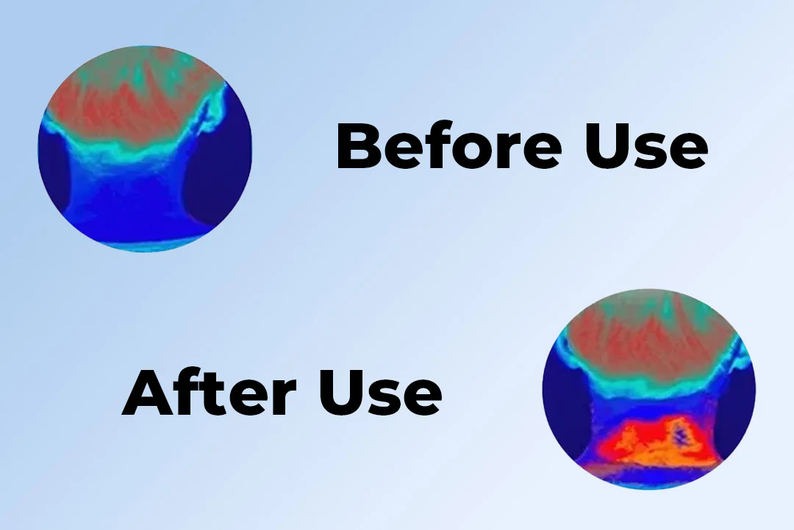
Damage Reversing
When muscles are stressed and contracted, they choke off their own blood supply, causing damage and impacting their ability to heal.
When you use the Dainely™ Stretcher, it causes a release in muscular tension and a flood of nutrient rich blood to the neck and shoulder area.
This aids in recovery and reverses significant damage to the neck region. This results in long term relief from neck pain and muscular soreness.
✅ Stretching your neck with the Dainely™ Stretcher also reduces tension headaches, and migraines
Ease the Pain for a Better Sleep
Designed to promote proper alignment of the neck, the Dainely™ Stretcher uses the patented three-way cervical traction technology to soothe the tight muscles around your neck. This allows them to return to their natural position, so you can sleep, and feel better. ✅87% of users reported better sleep, mood and concentration after 7 days of using the Dainelyww™ Stretcher.
✅Unlike over-the-door neck traction devices (which don't work), the Dainely™ Stretcher offers the same, optimal 26° stretch for as long as you need it, applying therapeutical pressure to your muscles.
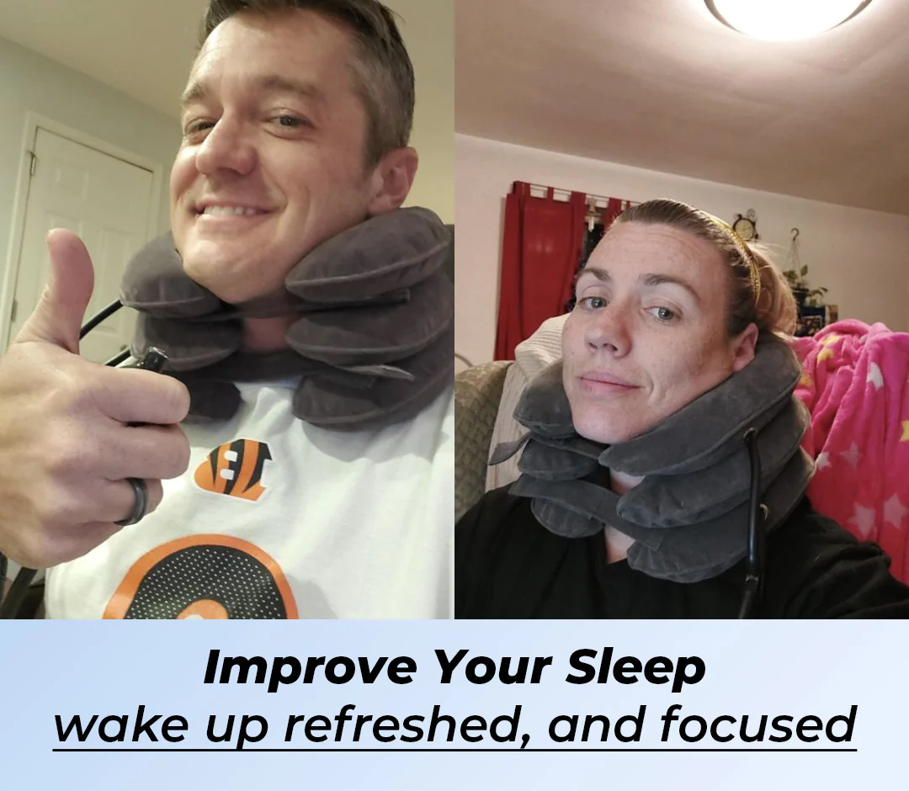
Eliminating Multiple Types of Pain
With the help of a team of medical professionals, and after 3 years of prototypes and $178,000 spent in laboratory testing, we stumbled upon the breakthrough combination of:- Acupressure- Sub-occipital muscle stimulation- The three-way system of cervical tractionTargeting all three elements of neck pain was the secret sauce that allowed us to create a device that's proven to help against the most common neck issues, such as:
Neck pain
The Dainely™ Stretcher gently decompresses your cervical discs, which is proven to eliminate neck pain, and improve neck mobility.
Tension Headaches
Tight muscles in the neck and upper back lead to tension headaches. The Dainely™ Stretcher boosts nutrient-rich blood flow to your neck area, thus soothing your muscles, and forcing them to return to their natural position. This relieves tension headaches, and migraines almost instantly.
Dowager's Hump / Desk Posture
Did you know that for every inch your head protrudes forward, an additional 10 pounds of force is added to the neck? The Dainely™ Stretcher forces your neck to return to its natural position, thus improving your posture, and eliminating that ugly neck hump.
Pinched Nerve
When your cervical discs are too compressed, they might squeeze out of place, and put pressue on one of the nerves. We call that a pinched nerve. The Dainely™ Stretcher fixes that by loosening up your spine at an optimized 26º angle. It comfortably decompresses your vertebrae, allowing bulging or herniated discs to retract, and affected, inflamed nerves to repair.
Strains and Sprains
Pain can often result from strained muscles or ligaments, muscle spasms or tension, damaged discs, injuries, or falls.The Dainely™ Stretcher supports your neck and enhances nutrient-rich blood flow to the neck area. This aids the healing process and helps you return to enjoying life without restrictions!
Injury Recovery
Preventing unnecessary movement is essential in the process of recovering from a neck injury.The Dainely™ Stretcher firmly supports your neck, and encourages your muscles to maintain a healthy posture, so that you can continue to heal effectively, and rapidly.
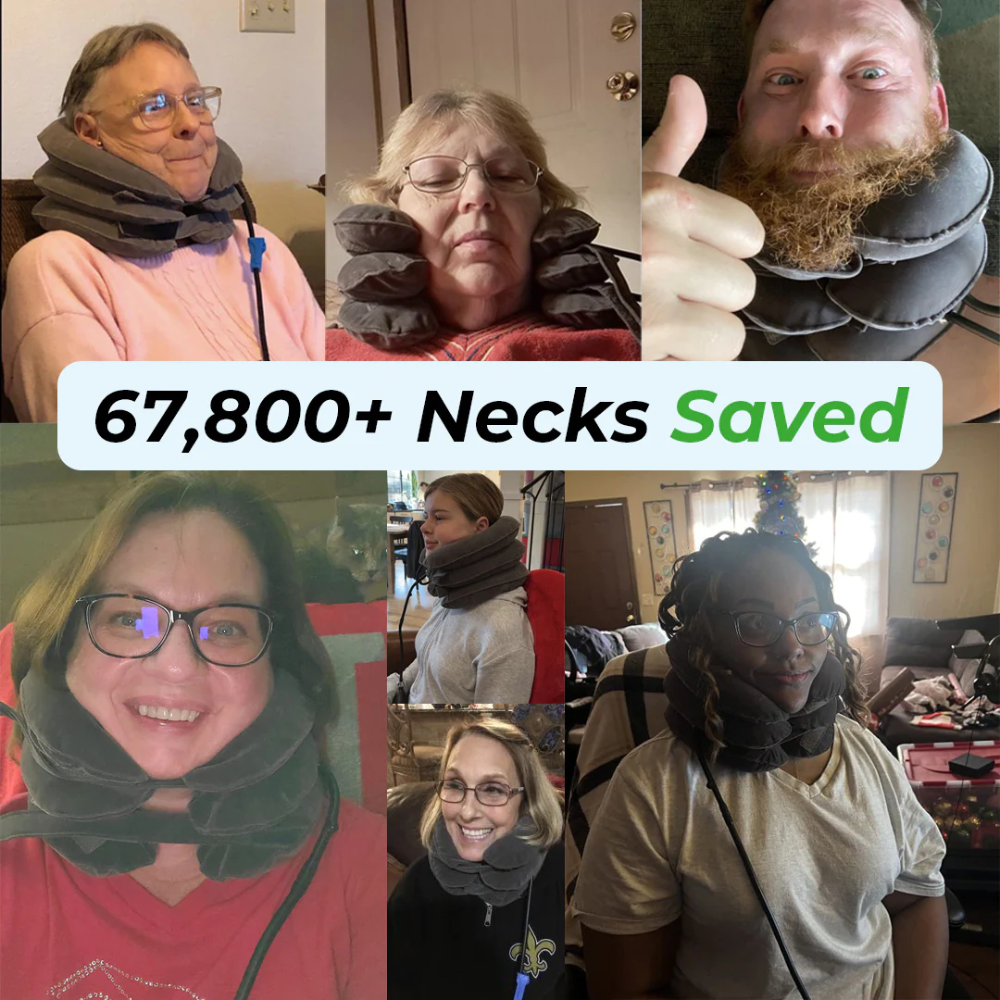
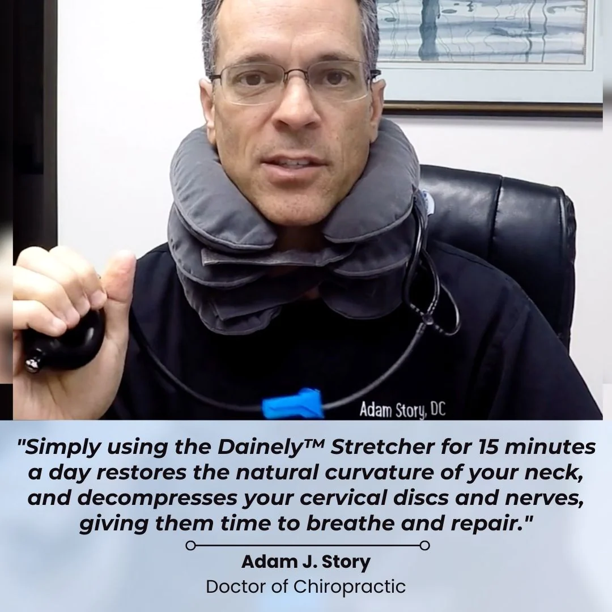
Professionally Designed and Recommended
Chiropractors and massage therapists aren’t always in arms reach.
The Dainely™ Stretcher has been designed and recommended by chiropractors as an effective way to get pain relief when you need it most.
For less than 1/5 of the cost of one therapist treatment, you can get results that last a lifetime.
Fantastic Quality of Life
Neck pain, soreness and other ailments like TMJ or tension headaches can wreak havoc on your life. Everyday activities are a constant reminder of the pain you constantly feel.
Today, you have the power to make a change. In eliminating your pain, the Dainely™ Stretcher creates the secondary benefits of: - Elevated mood - Better focus at work - Amazing posture and confidence - A pain-free sleep
You can finally get back to living again.
Tired of Reading? Here's a Message From our Founder, Daniel
My name's Daniel, and I'm one of the co-founders at Dainely.
When new customers come across our website, the same questions get routinely asked. So I decided to answer them in this video, and explain a little bit more about our product. Watch to find out more!
Don't Fall For Cheap Knock-Offs
Lasting Pain Relief Developed by Chiropractors Optimal Angle Hypoallergenic Materials Lasts a Lifetime 90-Day Money Back Guarantee Results in 10 Minutes
Dainy
Other Stretchers
✓
✖️
✓
✖️
✓
✖️
✓
✖️
✓
✖️
✓
✖️
✓
✖️
Trusted by 3,500+ people
Based on 3,591 reviews
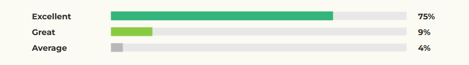
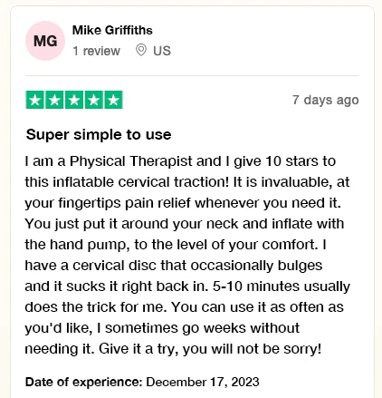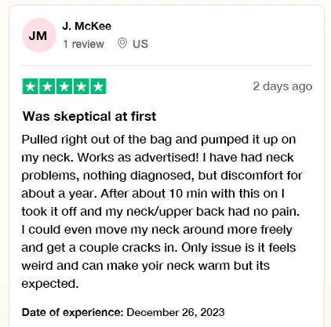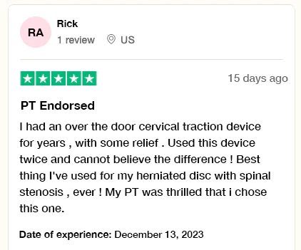
Real Success Stories
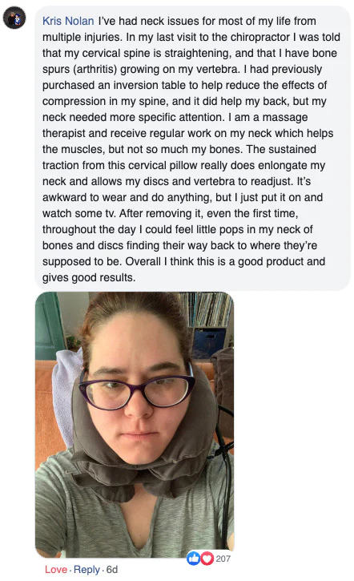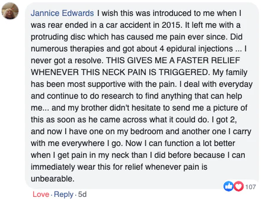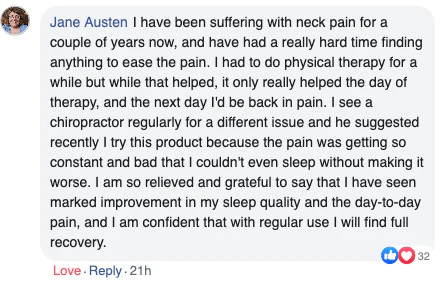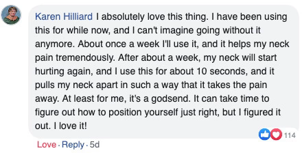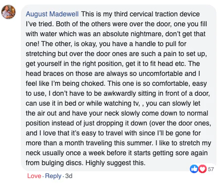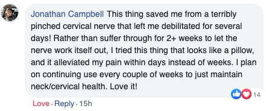
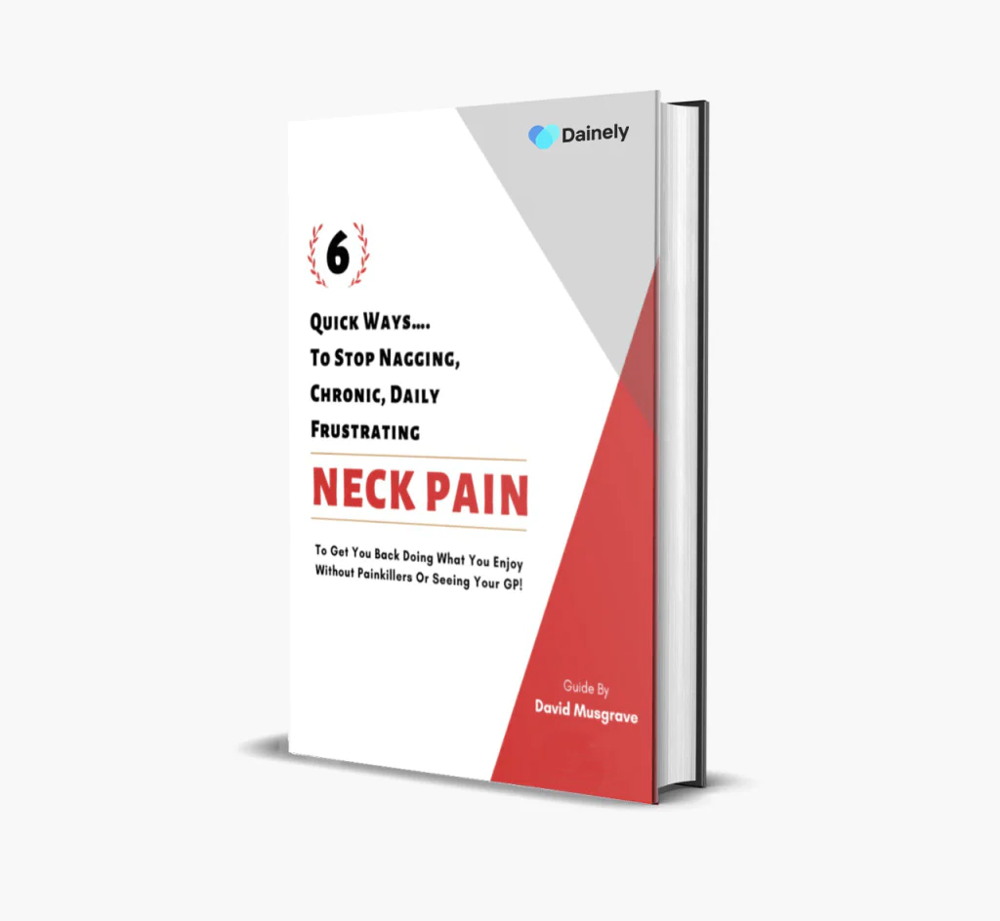
BONUS: Order Today and Get our $19 Neck Pain Relief eBook For Free
Normally valued at $19.00, our neck pain eBook comesfree with every purchase. Revealed Inside:
1. The 6 best exercises for neck pain chiropractors don't want you to know about!
Instantly! Our stretcher will provide instant relief from pain the first time you use it. With consistent use over a two week period you will gain benefits that last a lifetime.
How long should i use it for?
We recommend starting with two 5 minute periods a day and building up towards a continuous 10 minute session.
How do i use it?
1. Gently insert the deflated stretcher under your neck, positioning it so that it provides support to the base of your skull and upper neck. 2. Open the inflation valve and begin inflating the stretcher slowly, stop when it feels comfortably snug under your neck. 3. Once the neck stretcher is inflated to your desired level, lie still and relax for about 5-15 minutes. Focus on deep, slow breaths to enhance relaxation.*During this time, you can gently turn your head from side to side or nod it up and down to aid in the stretching process.
What if it doesn't work
Our device comes with a 90 Day Risk-Free Guarantee. We're incredibly confident that you'll get relief from your neck pain, tension headaches, and even arm/shoulder pain. but if you don't, please e-mail us at contact@dainelylab.com within 90 days of receiving the product.
Injury Recovery
Our Dainely™ Stretcher is perfect for treating: chronic neck pain, tension headaches, tight & sore neck muscles, desk posture as well as upper back & shoulder pain. It's also great for treating specific conditions like: cervical spondylosis, disc degeneration, pinched nerve & herniated disc.
Free Worldwide Shipping
Order now, and relieve your pain in 6-12 business days, thanks to out free worldwide, tracked, and insured shipping straight to your door.
Expert Customer Support
If for any reason you aren't 100% happy with your order, we'll do absolutely everything in our power to make it right. We're offering a 90-day money-back guarantee, so you can comfortably try your Dainely™ Stretcher out.
Not Available in Physical Stores
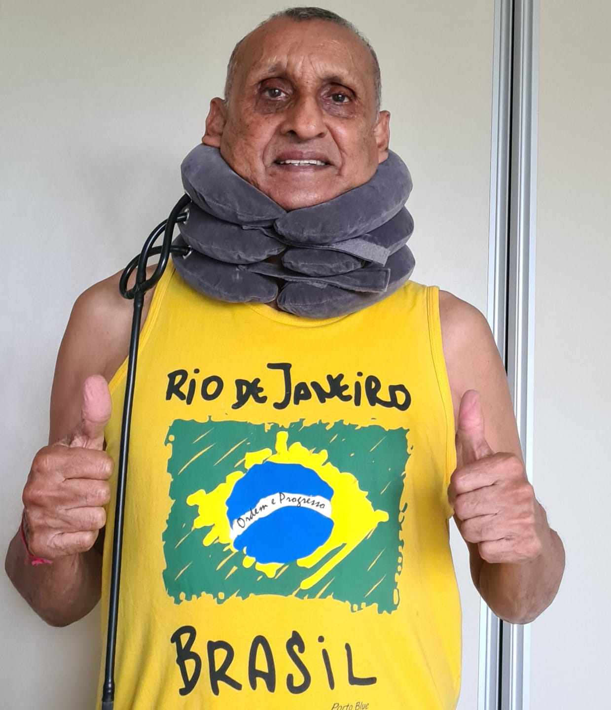
Jay S.
I have a problem with my c4, c5, c6 in my neck and my movements was beginning to be restricted with pain . After I used the neck stretcher I have much more movement and less pain and I have recommended the Dainly product to many in my family. I am very happy with my product and need Guidance on the long term use of the neck stretcher.
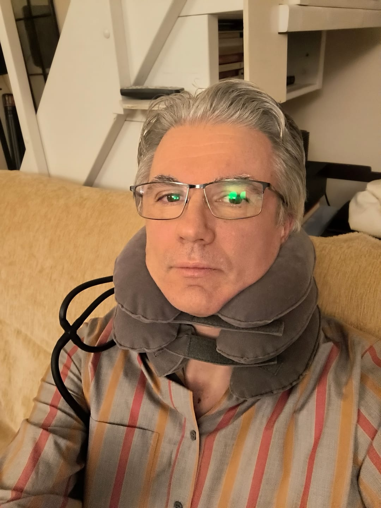
Susan M.
My wife got rid of her awfull headakes just by wearing the collar for one week several times few minutes each day. I tried it as well for neck pain and I felt relief and relaxed after 10-15 minutes of wearing it. The device was recommended to my wife by my othtoped doctor in the clinic where we perform our orthopedic recovery program each year.
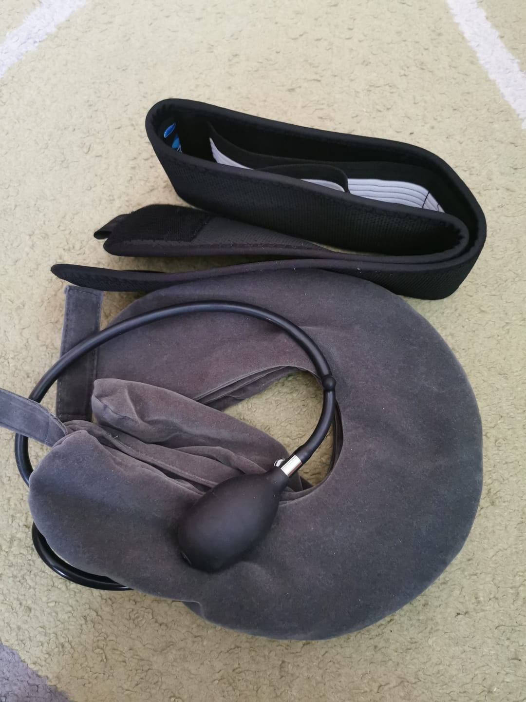
Marko K.
Great product. With Dainely stretcher instant relief of neck tension and headeches. Dainely back belt also great. Both products I would recommend definitely.
Marko K.
Great product. With Dainely stretcher instant relief of neck tension and headeches. Dainely back belt also great. Both products I would recommend definitely.
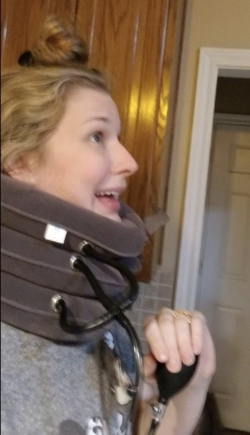
Amalia G.
Makes me neck feel better immediately after taking off. Takes a few minutes into wearing it for it to get comfortable.I don't recommend wearing this in public, cause you will get some strange looks. Look at me. Nope.I thought this thing was going to be “gadgety” but I have to say it has given me some welcome relief from neck and back pain. I only wear it for a few minutes a day but when inflated, it allows me to slowly roll my neck in circular motion and for me it’s instant relief. Good luck.
Oliver A.
I woke up one day with a kink in my neck, two days later all the muscles in my neck had seized up. Couldn’t recline, lay down and it even hurt to swallow. Any position that required muscle support caused sever pain. Went to urgent care and got some prednisone and lidocaine patches but also decided to try this after the second day of not being able to sleep. I would use the traction for 10-15 minutes at a time but than reduce the pressure to just aid in support. Now it might have been the lidocaine and/or prednisone kicking in but after one night of using this for support I was almost pain free the next day and just had a little stiffness when turning my head. At the very least I can say the support this thing gave me allowed me to sleep. If you are in a similar situation this is worth a try!
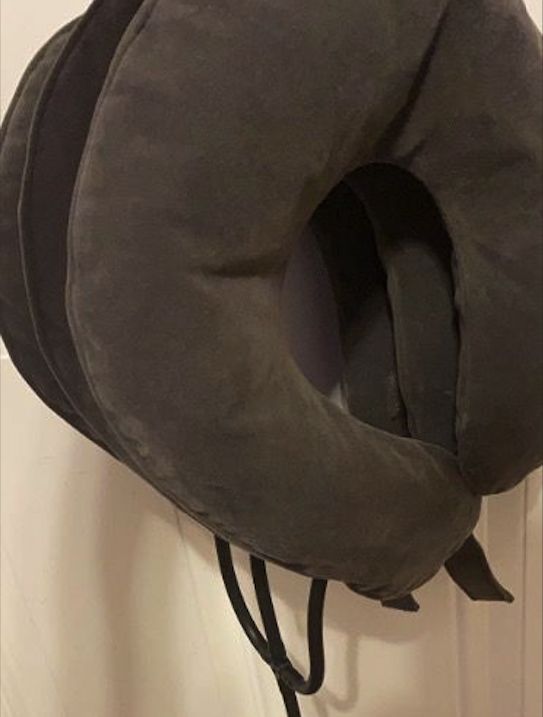
Oliver A.
I woke up one day with a kink in my neck, two days later all the muscles in my neck had seized up. Couldn’t recline, lay down and it even hurt to swallow. Any position that required muscle support caused sever pain. Went to urgent care and got some prednisone and lidocaine patches but also decided to try this after the second day of not being able to sleep. I would use the traction for 10-15 minutes at a time but than reduce the pressure to just aid in support. Now it might have been the lidocaine and/or prednisone kicking in but after one night of using this for support I was almost pain free the next day and just had a little stiffness when turning my head. At the very least I can say the support this thing gave me allowed me to sleep. If you are in a similar situation this is worth a try!
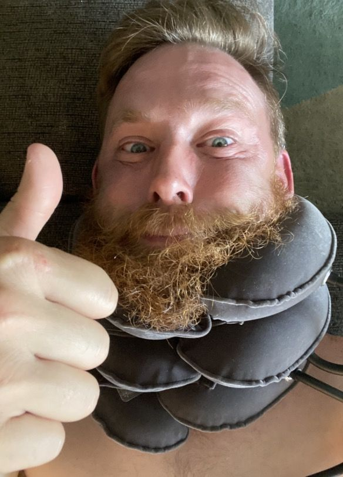
James P.
Works well on releasing a pain in the neck. My brother who gets pinched nerves in his neck recommended it for me and my wife.I usually do not like my arthritic messed up neck pulled on by chiropractor, but was able with this device to do the traction that felt comfortable to me, used it for 15 minutes and the pain was gone! It is well worth trying for the price. The main thing her and I both realized is that you have to make yourself relax your shoulders that seem to always be tense, due to stress, whiplash, too much computer, and posture, or driving a semi like I do for a living. Very pleased with this product and highly recommend
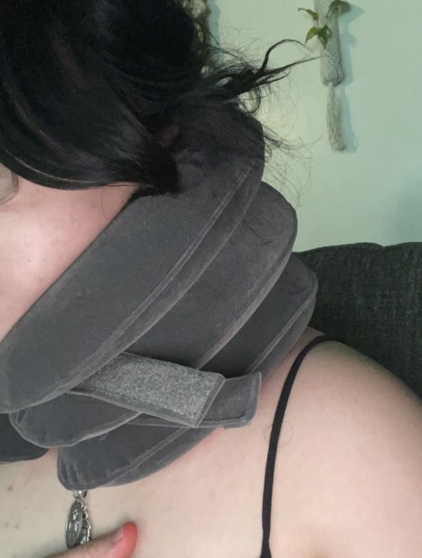
Eveline P.
A neck stretcher was recommended to me by a friend in the fitness community. She sent me the link to this page and after reading the reviews I decided to give it a shot. The manual bulb really helps me control how much inflate and can deflate the device. The color is nice and the material is easy to care for and wipe clean. I have fallen asleep after work on my sofa many times wearing this baby. Best nap and no discomfort for my neck. Afterwards I don't have to do that "snake" stretch for my neck because it feels fine. The price is great and the delivery was quick. Best purchase I ever made.
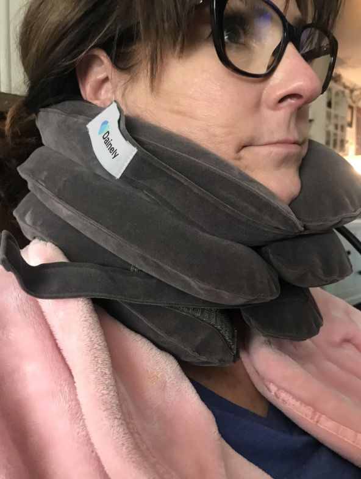
Christine T.
I have a bad cervical disc that I have been working with for a few years. I was desiring to add cervical traction to my regime and found this inflatable neck stretcher. I use this thing 1 to 3 times daily for about 10 minutes at a time. It has made a significant improvement in my cervical and upper thoracic flexibility.
No traction unit is a “cure all”, but having used this unit 1 to 3 times daily I find it a VERY affordable product. The key to using an inflatable stretcher is DON’T blow it up as full as it will go...blow it up until you BEGIN to feel a stretch in the neck muscles then for the duration of your treatment add a pump or two, or release some air as you feel necessary.
Consistency and comfort are more important than intensity and strain.
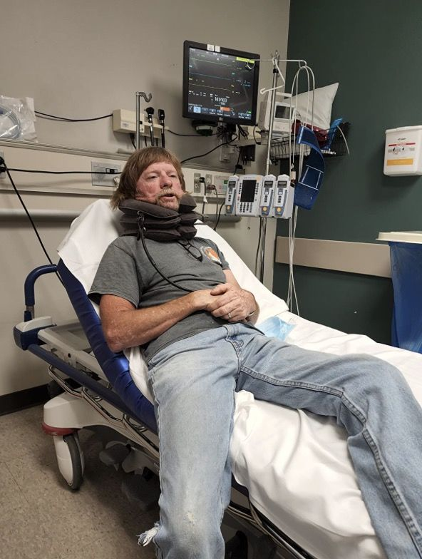
Michael M.
There is nothing I disliked about this product. Easy to put on, easy to pump up, easy to deflate. I have no clue why someone would have any problem trying to deflate or remove this. I had the option of neck surgery or physical therapy. I bought this and used it once before therapy and it is almost the same as going to the therapist but I do both since there machine is a little different. It has worked wonders. I had pain for almost two years, many doctor visits, so bad I could not sleep. One week after using this and I had no pain. I could still feel some tightness but it is 90% better than what I had before. I would definitely recommend trying this, therapy, or both before surgery.
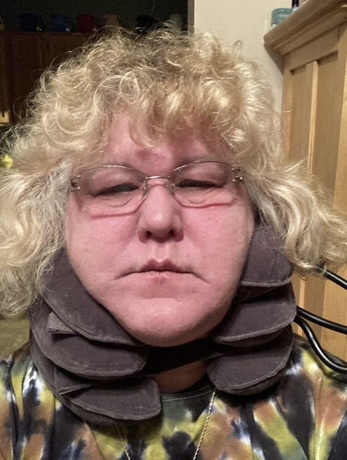
Tori M.
My neck had been aching for several weeks & I just couldn't get the kinks out. I thought about just hanging upside down and let gravity fix this for me but I have tried inversion tables before & I didn't like all the blood running to my head, so I started looking for something else & I knew when I saw this Neck Stretcher it was exactly what I needed. From the minute I put it on it was instant relief! I probably wore it a little longer than recommended for the first time use but the relief felt great!! I now only have to use it like every couple of weeks but I am so glad to have it when I need it!!
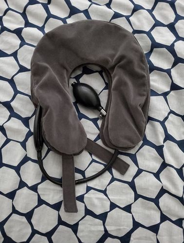
Benjamin T.
I have been suffering from neck issues since my accident in 2017. I have tried physiotherapy that helps, but the problem invariably would return. As a programmer, I spend endless hours in front of the computer. This aggravated the issue... My acupuncturist recommended this product during my visit to her to relieve headaches. She made me try it in her office, and I loved how it felt. I have been using it three times a day per her suggestion and noticed a significant improvement in the frequency of my headaches. For anyone looking to get some relief from neck issues, I highly recommend this product. You will not regret the purchase.
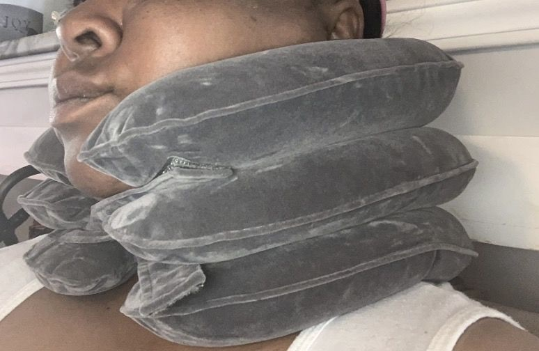
Charlotte B.
A couple of my neck vertabrae are sort of scrunched together due to many years of poor posture. If I sit at a desk for long periods and slouch, then by early evening my neck really hurts. I first got a big "collar" type of traction device for $150, but couldn't get it over my head and sent it back. Then I tried this thing. At first I couldn't really figure out how to use it. I was going to toss it, but gave it one last try, realized the proper way to inflate it (and keep it inflated), and since then it has been a huge help! I'd suggest checking with your doctor before you use this, as you probably should be careful about traction for your neck. But again, for me, it has been fantastic!
Liam H.
I have been experiencing pinch nerve symptoms. I was recommended this product by a friend. Best advice ever. Since I started using the product I can sleep better without waking to pain or numbness to my hand and fingers. Getting more of a restful sleep. Highly recommend this product to anyone wanting less pain and stress.
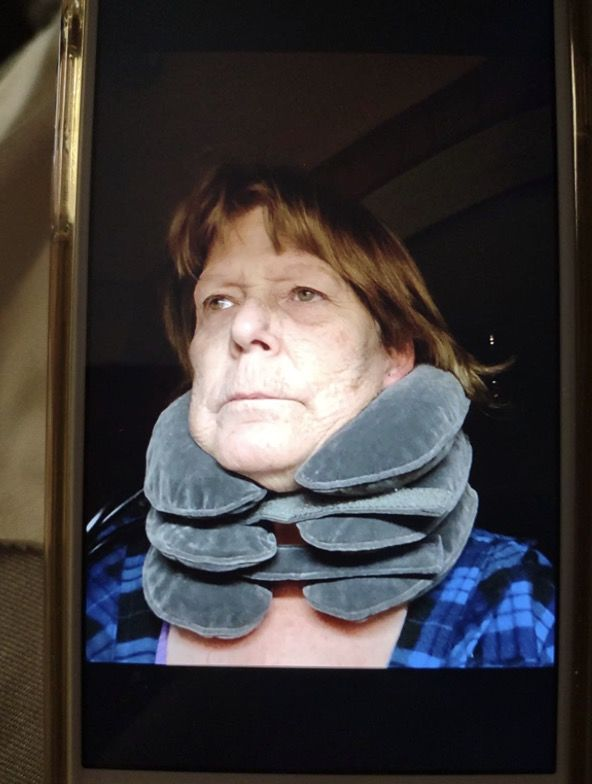
Tony C.
For about three weeks I was having quite an uncomfortable pain in my neck. I purchased the Neck Stretcher based on the good reviews. It worked very well for me. Whenever I used it the pain went away. I would use it for up to an hour at a time. I used it while working at my computer and while watching TV. Based on your needs you may have to pump it up enough so it really stretches your neck and this will feel tight under the jawline . Due to the relief I felt I purchased one for my 68 year old mother and she uses it when she has pain in her neck and it has helped her.
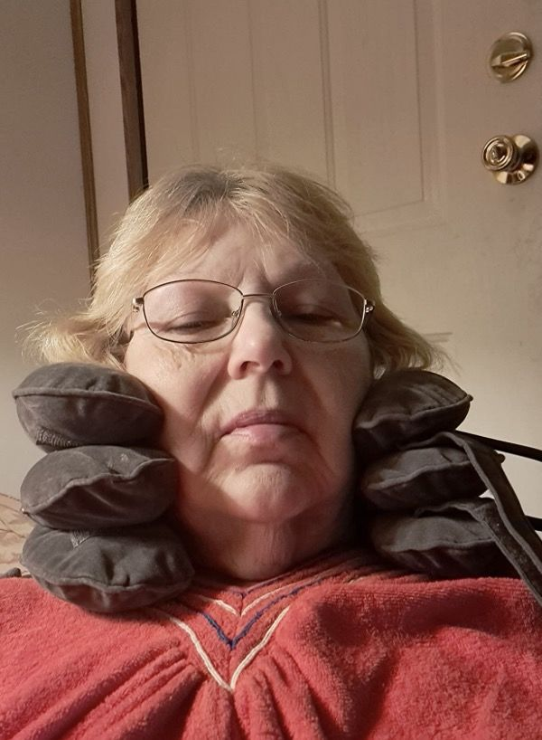
Lana M.
I HAVE A BULGING DISC IN MY NECK WHICH IS RADIATING PAIN THROUGH MY SHOULDER AND ARM. WAS TOLD THAT I WOULD PROBABLY NEED SURGERY BUT DECIDED TO GO TO A CHIROPRACTOR FIRST. HE STARTED STRETCHING MY NECK AND DOING TENS TREATMENTS ON SHOULDER. HE TOLD ME TO BUY THIS AND USE IT 3-4 TIMES A WEEK.I CAN'T BEGIN TO TELL YOU HOW GREAT IT WORKS. WHEN I TAKE IT OFF I HAVE PAIN RELIEF FOR UP TO 6-8 HOURS, SOMETIMES MORE. IT'S AMAZING HOW GOOD IT FEELS WHEN ITS ON MY NECK. I FEEL INSTANT RELIEF! NEVER THOUGHT SOMETHING, BESIDES A CHIROPRACTOR, COULD MAKE IT FEEL THIS GOOD. THE FACT THAT I AM PAIN FREE AFTERWARDS IS AMAZING.I WOULD HIGHLY RECOMMEND THIS PRODUCT TO EVERYONE THAT HAS NECK ISSUES AND RADIATING PAIN IN SHOULDERS AND ARMS.
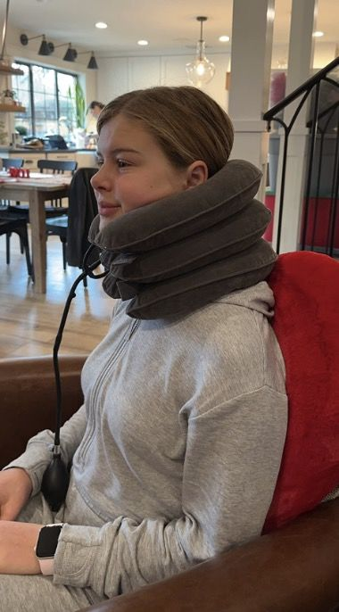
Danielle R.
There’s nothing I dislike about this product. Wow this is a Amazing product This help my neck pain so much. I was very uncomfortable to even move my neck and sleep on pillows. I went to chiropractor, and was mentioned to use this. I’ve been having neck pain for year now and now it's gone. I try everything to new pillows and etc. I used this Twice a day, and now I have more range of motion. This so easy to used and very easy to pack up. I bring this with me anywhere. I get this product five stars.
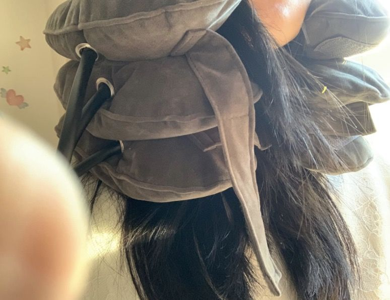
Tany V.
I have 4 herniated discs in my neck that have almost cut-off my para-sac. The spine doctor suggested I try home traction as I am not a candidate for surgery at this point in my life. I was very skeptical about this device, but I figured it was cheap enough that I could deal with pitching in the garbage if it did not work.A couple of days before it was due to arrive, I received an email from the company thanking me for my purchase and letting me know that they were there to answer any question I might have. Needless to say, I was impressed with the customer service right away.I have used this every day 10 minutes at a time. In the beginning I used it 3 to 4 times daily. Now after 4 months of use I usually only need to use it once a day. My pain has gone from a solid 8 down to a 1.5 to 2!Also, I had a part in my lower cervicale area that pushed outward. That is gone!So, if you do have issues with your neck, please don't be afraid to try this product. It truly is a real deal product.
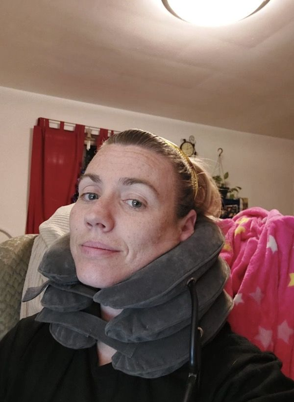
Alice K.
I bought this neck stretcher back in June 2023. I have used it a couple times a week since then. I am a former sufferer of vocal muscle tension disorder a few years back. During speech therapy, it was discovered that I carry my day-to-day stress tension in my neck. I have had to do stretching ever since to keep it at bay. This neck stretcher has been amazing. Since I started using it, I have not had to do my daily stretching. This neck stretcher has taken its place. It jas increased my range of motion on my neck. When wearing it, the neck tension just melts away! It is easy to use and the pump mechanism is sturdy. I highly recommend if you have tension in your neck or shoulders.